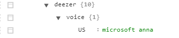

Deezer musique
La règle "Deezer musique" est le point d'entrée à toutes les commandes Deezer puis ensuite, suivant ce que vous dites, vous êtes orienté vers plusieurs possibilités.
A noter:
Cette règle est définie dans le fichier de propriétés, vous pouvez la modifier à votre convenance.
- rules -> musicMine
Après avoir dicté la règle "Deezer musique", vous pouvez:
- Dire directement un nom de playlist, d'album, de titre ou d'artiste
- Le plugin ira chercher ce que vous demandez dans votre bibliothèque personnelle dans l'ordre suivant:
- Vos playlist
- Vos albums
- Vos titres
- Vos artistes
- Faire une recherche dans tout Deezer en prononçant une des règles suivantes:
- Cherche un album
- Cherche une piste (ou un morceau ou un titre)
- Cherche un artiste
- Cherche un genre
Dans les 2 cas:
- Si aucune musique n'est trouvée, le plugin vous le notifie et vous redemande votre sélection
- Si une musique est trouvée, le plugin la lit directement.
- Si plusieurs choix sont trouvés, le plugin rentre alors dans un jeu de questions/réponses pour choisir ce qu'il faut lire.
- Le plugin vous dit le 1er choix trouvé, vous pouvez dire ensuite:
- Suivant
- Dit la musique suivante
- Précédent
- Dit la musique précédente
- Vas au début ou Retourne au début
- Retourne au début de la liste
- Vas à la fin
- Va à la fin de la liste
- Vas au milieu
- Va au milieu de la liste, par exemple si 50 musiques sont trouvées, il vous dira la 25ème.
- Vas au milieu à gauche
- Va au milieu de la liste puis coupe en 2 à gauche, par exemple si 50 musiques sont trouvées, il vous dira la 13ème.
- (50 / 2) / 2
- Vas au milieu à droite
- Va au milieu de la liste puis coupe en 2 à droite, par exemple si 50 musiques sont trouvées, il vous dira la 38ème.
- (50 / 2) + ((50 / 2) / 2)
- C'est quoi
- Dit de nouveau la musique
- Mets-le ou Vas-y mets-le ou ok ou c'est bon
- Lis la musique sélectionnée sur le client et arrête la commande
- Comme tu veux ou Fais-toi plaisir
- Choisit au hasard une musique dans la liste, la joue et arrête la commande
- En anglais
- Prononce la musique en Anglais. Pour revenir à la prononciation Française, dite En français
- Attention: vous devez avoir une voix anglaise définie dans la synthèse vocale Windows et la renseigner dans la propriété voice -> US du plugin
- Exemple:
- 
- En Français
- Prononce la musique en Français.
- Terminé
- Arrête la commande
- A noter: Si aucun ordre n'est donné, la commande s’interrompt automatiquement après 30 secondes
- Qu'est ce que je peux dire
- Si vous oubliez les commandes, le plugin vous énumère les choix possibles (ci-dessus)
Bon à savoir:
Lorsque vous faites une recherche dans deezer, le plugin fait une recherche complète, ce qui peut prendre beaucoup de temps (et souvent inutile).
Par défaut, la recherche est limitée à 50 musiques retournées. Vous pouvez modifier cette valeur dans la propriété search -> max
- Entrez un nombre ou "ALL" pour aucune limitation
Créé avec HelpNDoc Personal Edition: Générateur de documentations PDF gratuit